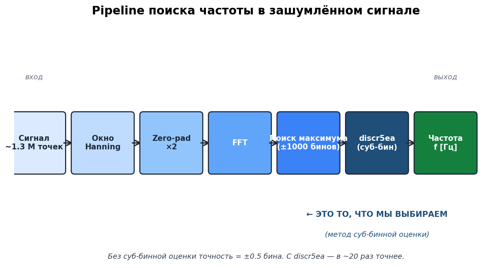
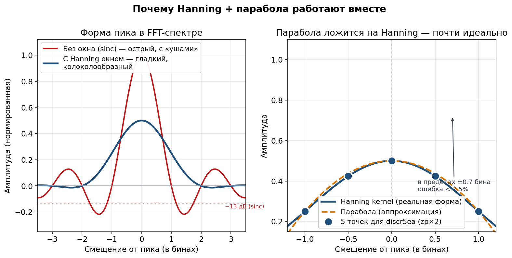

Обзор¶
История, постановка задачи, полный pipeline
Эта страница — обзорный вход в модуль для тех, кто знакомится с ним впервые. Цель — за 5 минут понять, что делает библиотека, зачем она нужна и как устроен её pipeline.
История из жизни¶
Представь радар (или эхолот, или сонар — не важно). Он излучает радиоволну, она летит, отражается от цели (самолёта, корабля, рыбы) и возвращается. По времени возврата и по изменению частоты можно понять:
как далеко цель;
с какой скоростью она движется;
в каком направлении.
Но вот беда: возвращается не только полезный сигнал, но и шум. Атмосфера, электроника приёмника, волны на море, помехи. Шум может быть в десятки раз сильнее самого отражения.
Наша задача: среди этого шума найти одну конкретную частоту — ту, в которой «сидит» отражение от цели. И найти её очень точно — потому что точность по частоте прямо переводится в точность по дальности.
Простая аналогия
Ты стоишь в толпе на стадионе, где все кричат, и пытаешься услышать, на какой именно ноте поёт один конкретный певец. Шум — это толпа. Певец — наша полезная частота. Найти его голос в этом хаосе — это и есть наша задача.
Постановка задачи¶
Формально: есть 3–5 отсчётов сигнала вокруг максимума, вокруг точки пика. По этим отсчётам нужно оценить истинное положение пика с точностью в десятки раз лучше, чем шаг сетки.
Для FFT-задачи это означает:
а затем итоговая частота:
Точность оценки \(\delta\) в бинах называется суб-бинной точностью. Чем она выше, тем точнее итоговая частота в герцах.
Полный pipeline обработки¶
{kind=link}

Рис. 3 Pipeline от сырых отсчётов до точной частоты.¶
Разберём каждый шаг:
1. Сигнал ~1.3 млн точек¶
На вход приходит запись комплексной амплитуды сигнала. Например, 1.3 миллиона отсчётов при \(f_s = 100\) МГц = запись длиной ~13 мс.
2. Окно Hanning — «сглаживаем края»¶
Перед FFT умножаем сигнал на плавное окно в форме колокола — Hanning. Зачем? Без сглаживания в спектре появятся фальшивые пики по бокам настоящего (боковые лепестки).
Аналогия
Если обрезать запись песни «прямо посередине», будет слышен щелчок. Hanning — это плавное затухание в начале и в конце, как fade-in/fade-out.
3. Zero-padding ×2 — «добавляем нул軶
К сигналу дописываем нули до двукратной длины. Это даёт более частую сетку бинов в спектре — хотя разрешение (способность различать близкие частоты) не меняется. Это именно интерполяция сетки.
4. FFT — «считаем спектр»¶
БПФ превращает сигнал из временной области в частотную. После FFT видим пик на той частоте, где «сидит» наш сигнал.
5. Поиск максимума — грубая оценка¶
Проходим по спектру и находим индекс \(k_{\max}\), где \(|X(k)|\) максимальна. Это грубая оценка частоты с точностью до одного бина (± 0.5 бина).
6. discr5ea — суб-бинная оценка¶
У нас есть 5 точек вокруг максимума. По ним алгоритм подгоняет гауссиан в log-пространстве и находит его вершину — это и есть суб-бинное смещение \(\delta\).
7. Итоговая частота¶
Финальная формула:
Задача решена.
Главная идея: парабола + Hanning = любовь¶
{kind=link}

Рис. 4 Слева: форма пика sinc (без окна, красная) vs Hanning kernel
(с окном, синяя). Справа: парабола идеально ложится на Hanning kernel
с ошибкой < 2.5% в пределах ±0.7 бина от вершины.¶
Почему это работает: если взять 5 точек на Hanning-пике и «натянуть» на них параболу \(y = ax^2 + bx + c\), она будет совпадать с реальной формой очень точно в главном лепестке. А у параболы есть вершина, которую легко найти по школьной формуле \(x = -b/(2a)\). Эта вершина и есть наша оценка истинного пика.
Гора в тумане
У тебя 5 альтиметров, расставленных через равные промежутки. По их показаниям ты хочешь угадать, где самая высокая точка горы. Если форма горы — парабола (а Hanning kernel очень похож!), подгоняешь параболу к 5 точкам и берёшь её вершину.
Суб-бинная оценка на цифрах¶
Представь линейку с делениями через миллиметр. Ты измеряешь карандаш — ближайшая метка говорит «15 мм». Но карандаш может быть 14.8 или 15.3 мм — ты не знаешь точно, точность линейки = половина деления.
То же с FFT:
Без суб-бинной оценки точность = ±0.5 бина
С суб-бинной оценкой точность = ±0.01 бина (в 50 раз точнее!)
Для типичного радара (\(f_s = 100\) МГц, \(N = 4\) млн, \(\Delta f \approx 23.84\) Гц):
Метод |
Ошибка |
Во сколько раз |
|---|---|---|
Без интерполяции ( |
~12 Гц |
\(\times 1\) |
|
~1.2 Гц |
\(\times 10\) |
discr5ea / discr5qa ★ |
~0.6 Гц |
\(\times 20\) |
Quinn 2nd (будущее, по комплексным) |
~2.4 мГц |
\(\times 5000\) |
Структура модуля¶
discriminator_estimates/
├── include/ ← публичный C API (8 заголовков)
│ ├── discrcg.h ← Центр тяжести
│ ├── discrsd.h ← Сумма-разность
│ ├── discrqa.h ← Парабола (3pt)
│ ├── discrea.h ← Гауссиан (3pt)
│ ├── discr5ea.h ← МНК 5pt: 5QA + 5EA ★ новое
│ ├── discr_auto.h ← Авто-выбор + extrap ★ новое
│ ├── discr_common.h ← Обёртки discr2/discr3
│ └── discr_types.h ← DISCRTYPE enum
├── src/ ← реализация (.c)
├── test_cpp/ ← простые C++ тесты
├── test_gtest/ ← Google Test (40+ тестов)
├── test_python/ ← Python тесты + графики
└── Doc/
├── Sphinx/ ← вы здесь
├── Doxygen/ ← параллельная Doxygen-документация
├── API.md ← краткий справочник
├── Full.md ← полная документация
├── Quick.md ← быстрый старт
└── plots/ ← графики и анимации
Дальше¶
Формулы — полные математические формулы всех 6 методов
Сравнение методов — сравнительный обзор методов
Рекомендации — итоговые рекомендации с обоснованием
Визуальный разбор — GIF-анимации и 3D-карты точности
C API Reference — справочник C API